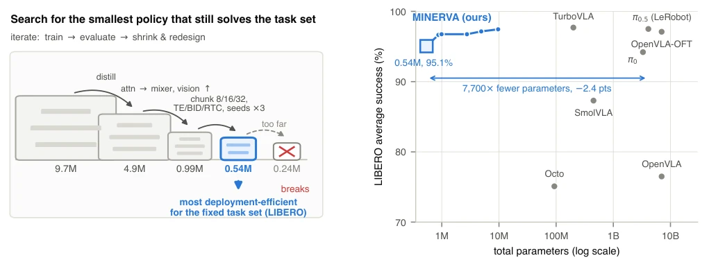
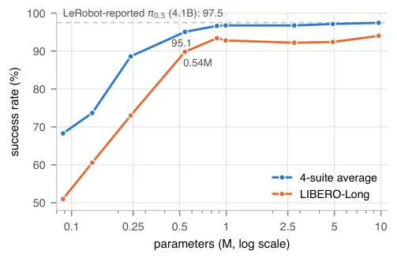

This paper poured cold water on the VLA community: the LIBERO benchmark is actually a "question bank". The authors compressed the model to 0.54M parameters, surprisingly achieving a 95.1% success rate, with a gap of less than 2.5 points compared to the 4.1B parameter π0.5 [7]. This is like using an abacus to get an answer similar to a supercomputer, provided the questions remain unchanged. The highlight is extreme efficiency, 5ms inference on CPU, over 100 times faster than SmolVLA [3]. But to put it bluntly, this model is a "parrot with good memory"; it gets stumped when lighting or objects change, with robustness nearly zero. It proves that under a fixed task set, generalization might be a pseudo-requirement, but packaging "overfitting" as "capacity floor" is a bit risky. However, the VRAM saved for embedded devices is truly beneficial. Through task ID permutation probes, the authors confirmed that task selection relies mainly on indexing rather than language understanding, which further reveals the limitations of the benchmark.
Current VLA models such as OpenVLA [2], π0 [4] often have billions of parameters, training requires multiple GPUs, inference requires GPU, which is unfriendly for edge deployment. The authors point out that once the robot task set is fixed, generalization is not necessary; the key lies in the "minimum capacity required by the task set". Existing analysis [13] indicates LIBERO evaluation is mainly a memory test, not generalization. Therefore, the research motivation is to measure the "capacity floor" under a fixed task set, rather than blindly stacking parameters. This aligns with the philosophy of deploying efficient RL [10], optimizing deployment constraints rather than development convenience. Existing work like TurboVLA [5] optimizes speed but retains the language pathway, while MINERVA directly strips language, exploring more extreme efficiency boundaries.
The overall process is an end-to-end visual-action policy. Data comes from LeRobot's LIBERO demonstrations. Architecturally, the visual encoder is a CNN trained from scratch (MobileNet style), without a pre-trained backbone. Language instructions are replaced with learned task-ID embeddings for 40 tasks, completely removing the language model. The action head adopts a DiT structure, but uses MLP Mixer to replace Self-Attention to save parameters. Training objectives compared Flow Matching and direct L1 regression. Inference adopts ACT-style temporal ensembling and per-step replanning. Distillation techniques are used for small model training, but the teacher network is removed during inference. The key innovation lies in proving that under LIBERO scenarios, language understanding can be replaced by task indexing, and generative action heads are less efficient than regression ones. Additionally, AdaLN-Zero modulation is shared to further compress parameters, and increasing observation history from 1 step to 2 steps can significantly improve performance.
Tested on four LIBERO task sets, the 0.54M model achieves 95.1% success rate, only 2.4 points lower than the 4.1B π0.5 [7]. Ablation studies show Chunk length and visual allocation are the main influencing factors; Flow Matching has no significant advantage compared to L1 regression but is 3.8 times slower. Under LIBERO-Plus perturbations, the small model has poor robustness (success rate near 0% under lighting), proving its essence is memory. In terms of inference speed, the 0.54M model requires only 8.9ms on CPU, 113 times faster than SmolVLA [3]. Additionally, on the LIBERO-90 extended task set, the model still maintains a 94.6% success rate, proving its generalization potential under larger task sets, although robustness tests reveal its fragility in real-world scenarios.

Fig. 1. Left: we search for the smallest policy that still solves the fixed LIBERO task set, iterating over model scale, capacity allocation, objectives and inference strategies; the search stops at a 0.54M-parameter empirical capacity floor — one step smaller and the benchmark breaks. Right: that floor (blue) lands in the same roughly 95–98% band as fine-tuned generalist VLAs two to four orders of magnitude larger (gray, paper-reported: Octo [1], OpenVLA [2], SmolVLA [3], π0 [4], TurboVLA [5], OpenVLA-OFT [6], as compiled in [3], [5], [6]); the π0.5 point is the LeRobot implementation’s reported result [7], [8].

Fig. 3. Success versus total parameters (log scale), 2,000 rollouts per point. Performance saturates near 1M parameters; below 0.25M it collapses, and the long-horizon suite (orange) falls first.